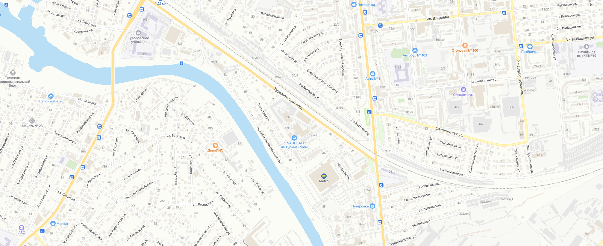

OMODA АГАТ Астрахань
+7 (8512) 48-28-28
пер. Туркменский, 12 Б

Дилерский центр OMODA АГАТ на Туркменском уже открыл свои двери.
Станьте обладателем OMODA С5 от 2 014 900 ₽
Запишитесь на тест-драйв прямо сейчас
OMODA АГАТ Астрахань
+7 (8512) 48-28-28
пер. Туркменский, 12 Б